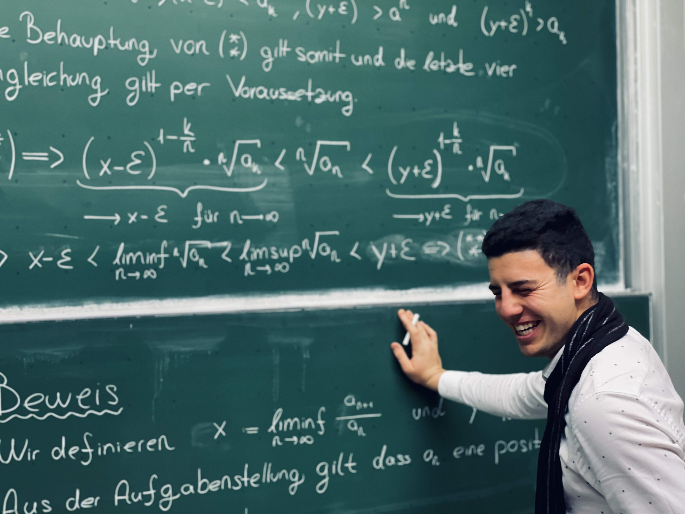

Kontakt
Über mich

Ich wurde am 12.05.1999 in Augsburg geboren und habe einen Teil meines Lebens auch in der Türkei verbracht. Diese unterschiedlichen Lebensräume und kulturellen Erfahrungen haben mich nicht nur persönlich geprägt, sondern auch meine Sicht auf Bildung, Leistung, Disziplin und Entwicklung wesentlich beeinflusst. Früh habe ich gelernt, dass nachhaltiger Fortschritt selten durch bloßes Talent entsteht, sondern vor allem durch Ausdauer, Klarheit im Denken, Geduld im Lernen und die Bereitschaft, sich immer wieder neu mit Herausforderungen auseinanderzusetzen.
Heute befinde ich mich im letzten Abschnitt meines Bachelorstudiums der Mathematik an der Ludwig-Maximilians-Universität München. Zuvor habe ich bereits Physik studiert. Dieses frühere Studium war für mich in vielerlei Hinsicht sehr wertvoll, weil es meinen Blick für naturwissenschaftliche Zusammenhänge, Modellbildung und präzises analytisches Denken geschärft hat. Im Laufe der Zeit wurde mir jedoch immer deutlicher bewusst, dass mich vor allem die theoretischen, strukturellen und begrifflich sauberen Aspekte der Wissenschaft besonders faszinieren. Gerade das exakte Formulieren von Problemen, das logische Entwickeln von Argumenten und das systematische Aufbauen mathematischer Beweise haben mich schließlich dazu geführt, mich vollständig der Mathematik zuzuwenden.
Die Mathematik ist für mich weit mehr als nur ein Studienfach. Sie ist eine Denkweise, eine Sprache der Präzision und eine besondere Form geistiger Ordnung. Mich begeistert an ihr insbesondere, dass sie in einzigartiger Weise Klarheit, Abstraktion, Logik und Eleganz miteinander verbindet. Viele Inhalte erschließen sich nicht auf den ersten Blick, sondern erst dann, wenn man bereit ist, Definitionen wirklich ernst zu nehmen, Strukturen zu erkennen und Gedankengänge sauber zu entwickeln. Gerade dieser Prozess des tieferen Verstehens macht für mich den eigentlichen Reiz der Mathematik aus.
Im Wintersemester 2025/2026 war ich als Tutor in der Veranstaltung Analysis I tätig. Im Sommersemester 2026 werde ich zusätzlich die Tutorentätigkeit in der Veranstaltung Analysis II übernehmen. Die Arbeit im Tutorium bedeutet mir sehr viel, weil sie genau an der Schnittstelle zwischen fachlicher Präzision und didaktischer Verantwortung liegt. Ich empfinde es als äußerst bereichernd, Studierende auf ihrem Weg in die Hochschulmathematik zu begleiten, typische Anfangsschwierigkeiten einzuordnen und dabei zu helfen, nach und nach mehr Sicherheit im Umgang mit Definitionen, Sätzen und Beweisen zu gewinnen.
Besonders wichtig ist mir in der Lehre eine verständliche, strukturierte und zugleich mathematisch saubere Darstellung. Ich versuche, komplexe Inhalte nicht unnötig kompliziert erscheinen zu lassen, ohne dabei an Präzision zu verlieren. Mein Ziel besteht nicht nur darin, einzelne Aufgaben zu erklären, sondern mathematische Denkweisen transparent zu machen: Wie geht man an eine unbekannte Aufgabe heran? Welche Rolle spielen Definitionen wirklich? Wie erkennt man die Idee eines Beweises? Und wie gelangt man von einem ersten intuitiven Verständnis zu einer sauberen mathematischen Argumentation?
Neben meiner universitären Tätigkeit arbeite ich seit mittlerweile rund sechs Jahren intensiv in der Nachhilfebranche. In dieser Zeit durfte ich weit über 500 Schülerinnen, Schüler und Studierende in unterschiedlichen mathematischen Themengebieten begleiten. Diese langjährige Erfahrung hat mir gezeigt, dass erfolgreiche Vermittlung nicht allein davon abhängt, ein Thema selbst zu beherrschen, sondern vor allem davon, die Perspektive des Gegenübers einzunehmen, Denkblockaden zu erkennen und Lernprozesse individuell aufzubauen. Jeder Mensch versteht Mathematik auf eine etwas andere Weise, und genau deshalb braucht gute Lehre sowohl fachliche Tiefe als auch pädagogisches Feingefühl.
Darüber hinaus habe ich über mehr als zwei Jahre hinweg auch berufliche Erfahrungen in der Finanz- und Consultingbranche gesammelt. Ich war unter anderem als Werkstudent im Bereich Finanzanalyse tätig und habe zudem als qualifizierter Sales-Berater bei einem Partnerunternehmen von SAP gearbeitet. Diese Stationen haben meinen Blick dafür erweitert, wie analytisches Denken, strukturierte Problemlösung und präzise Kommunikation auch außerhalb der Universität in professionellen Kontexten von zentraler Bedeutung sind. Gerade die Verbindung aus mathematischer Denkweise, wirtschaftlichem Verständnis und klarer Kommunikation empfinde ich als äußerst wertvoll.
Auch der Sport hat mein Leben über viele Jahre hinweg stark geprägt. Ich habe im Amateurbereich Tennis gespielt und dabei eine Leistungsklasse im Bereich von 8 bis 9 erreicht. Darüber hinaus habe ich Golf auf einem sehr hohen Niveau betrieben und zeitweise halbprofessionell gespielt; mein bestes Handicap lag bei -2,1. Beide Sportarten haben mich in besonderer Weise geformt, weil sie Konzentration, Disziplin, Technik, mentale Stabilität und einen langfristigen Umgang mit Entwicklung verlangen. Gerade diese Erfahrungen aus dem Leistungssport haben auch meinen akademischen Weg beeinflusst: die Bereitschaft, an Details zu arbeiten, Rückschläge auszuhalten, kontinuierlich an sich zu feilen und Leistung nicht als Zufall, sondern als Ergebnis systematischer Arbeit zu verstehen.
Insgesamt ist mein Weg von verschiedenen Erfahrungen geprägt worden: durch Mathematik und Physik, durch Nachhilfe und Tutorium, durch Finanz- und Beratungstätigkeiten, durch Sport und durch unterschiedliche persönliche und kulturelle Lebensstationen. All diese Bereiche haben in mir die Überzeugung gestärkt, dass nachhaltige Entwicklung immer dort entsteht, wo Anspruch, Struktur, Geduld und echte Begeisterung zusammenkommen. Genau diese Haltung versuche ich auch in meine Lehrtätigkeit einzubringen.
Mit dieser Webseite möchte ich deshalb nicht nur Materialien bereitstellen, sondern eine verlässliche und übersichtliche Anlaufstelle schaffen, die Studierenden beim Lernen wirklich hilft. Die Seite soll Inhalte bündeln, Orientierung geben und das Verständnis für die Struktur der Analysis vertiefen. Gerade in den ersten Semestern erscheint die universitäre Mathematik vielen Studierenden abstrakt, streng und ungewohnt. Umso wichtiger ist es, einen Rahmen zu schaffen, in dem mathematische Ideen klarer, zugänglicher und systematischer nachvollzogen werden können.
Mein Anliegen ist es, Studierende nicht nur kurzfristig bei einzelnen Aufgaben zu unterstützen, sondern sie dabei zu begleiten, ein tragfähiges mathematisches Fundament aufzubauen. Dazu gehören sauberes Arbeiten, präzise Sprache, methodisches Denken und die Fähigkeit, auch anspruchsvolle Inhalte Schritt für Schritt zu durchdringen. Wenn diese Seite und meine Arbeit im Tutorium dazu beitragen können, dass Studierende mehr Klarheit, Sicherheit und vielleicht sogar Freude an der Mathematik gewinnen, dann ist ein wesentliches Ziel bereits erreicht.